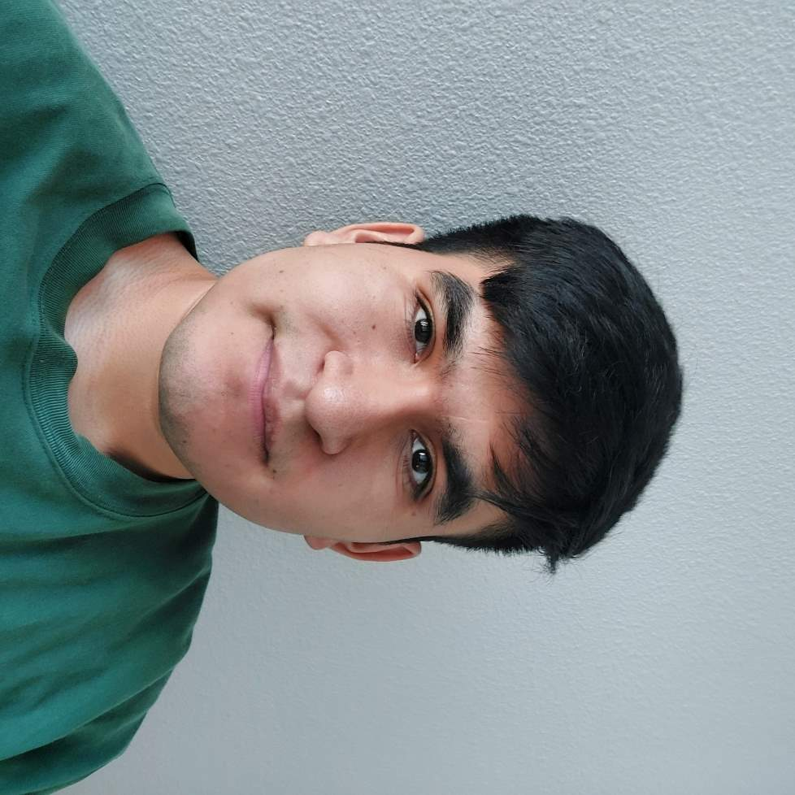

I am Andres Jaramillo, and I currently attend San Jose State University. During my time, I have explored many different mediums of art, from traditional pencil, painting, sculpting, woodwork, digital and more. While some have been tougher than others, I always end up having a great time creating.
Ever since I was young, I have always been one to draw and doodle, even making comics back with friends in elementary. Nowadays, I still enjoy doodling and sketching cartoon-like drawings with traditional pencil and paper, but I have grown quite fond of the various ways to make digital pieces, such as digital art-making programs, or even things such as video editing. In a world where technology is only continuing to grow, Why should the way we make art not grow alongside it?